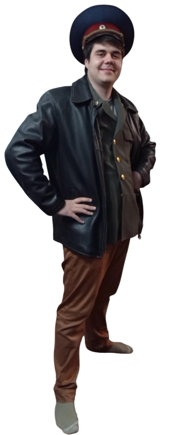
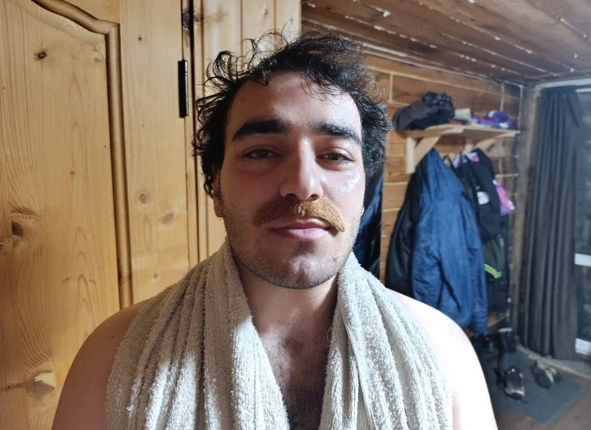

Погода на зоне

Биография начальника зоны
Курочко Армен Петрович. Чекист , тюремный врач , начальник тюрьмы.
Родился в 1990 году в семье работника фсина и с детства мечтал избивать зеков как его отец . Учился в школе крайне плохо , что было поводом для гордости в семье , ведь отец видел в сыне свое продолжение и безмерно им гордился . После школы как и полагается чекисту отслужил в армии , но во ФСИН решил пойти не обычным вертухаем , а сразу врачом , из за чего к сожалению пришлось пойти в вуз , взяв целевое направление от соответствующей организации.

В вузе учился так же плохо как и в школе аргументируя это тем что нахуя на зоне что то знать , больше всего юноша ждал практику , которая обычно проходит в тюрьмах , где он сразу себя показал с лучшей стороны : " однажды я случайно пожал руку зеку , а потом увидел что он спидозный . Дабы не поползли обо мне слухи , я вколол петушаре литр адреналина и наблюдал за тем как у него порвалась аорта ".
Еле еле закончив вуз врача сразу же определили на свой участок , чего он так долго и ждал. Придя в первый день на работу , сразу ввел новые правила как с ним общаться , не только зекам , но и работающим там врачам и сотрудникам администрации. Взял себе тревожную кнопку , которая предназначена только для баб , чтобы в любой момент можно было позвать вертухая и отправить зека в оздоровительную пидорятню. Приказал приветствовать его только с фразы здравия желаю гражданин начальник и только потом рассказывать о самочувствии.
Быстрый карьерный взлет . На второй день подговорил двух зеков пачкой сигарет , дабы сместить заведующего отделения терапии с его должности , дабы занять его теплое место , ведь его зп существенно выше и составляла 25 тысяч рублей вместо 22 получаемых обычным терапевтом. Курочко принял ряд реформ , вследствие чего смертность в больнице существенно снижалась:
- Пациентам отказывавшимся от терапии , врач ласково говорил :" сгною нахуй в карцере ".
- Уникальное решение сложных случаев :" у нас на зоне нету диализа и пациентов с хбп я подключал к пылесосу , там же есть фильтр и так кровь очищалась , потом включал обратный режим и закачивал их кровь им обратно ".
- Уникальная терапия у пациентов с циррозом печени различного генеза Если я видел у зека , паразита тюремной власти , цирроз на узи , я прям там датчиком его по печени и хуярил , чтоб он истек нахуй кровью и перевели его в хирургию , пусть там ебутся
- Сумел создать на зоне электрофорез
Я приказывал вертухаям мазать их электрошокеры аскорбиновой кислотой и хуярить зекам по почкам и печени для профилактики заболеваний гераторенальной системы.
Создав почти нулевую смертность в стационаре ( избивал зеков в стационаре, выписывал обратно в камеру , там они и погибали ) , врач решил возглавить больницу и по той же схеме списал глав врача и занял его место
Поработав ещё несколько лет глав врачом в больнице и устав от медицины , решил возглавить уже саму тюрьму , какая была схема вы уже поняли , и сейчас Курочко Армен Петрович является начальником тюрьмы